À propos de moi
Bonjour moi c'est Brenda,
Une développeuse web junior, passionnée par les projets qui donnent le sourire et qui souhaite se spécialiser en cybersécurité. Je me suis découverte une passion pour le développement il n'y a pas si longtemps, et depuis, je suis fascinée par la création de sites web et par la résolution de problèmes techniques. En dehors du développement, je trouve mon équilibre dans mes passions : le catch, les animés et la culture japonaise et parfois les jeux vidéo.
Mon parcours
Je suis une développeuse web passionnée, actuellement à la recherche d'une alternance en cybersécurité. Formée à Holberton School, j'ai acquis des compétences solides en développement full-stack avec des technologies comme JavaScript, Python, C, React et Django. Mon objectif est de combiner mes compétences en développement avec une expertise en sécurité informatique.
Mon objectif
Mon objectif aujourd'hui est de trouver un stage ou une alternance pour continuer à progresser, mettre en pratique mes compétences en contribuant à des projets concrets en liens avec la sécurité informatique. Tout cela afin de me spécialiser en cybersécurité et devenir analyste forensics.
Langages et technologies
